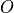
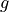
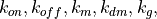
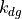
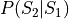
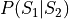

kMC¶
Functions for kinetic Monte Carlo simulation (Gillespie algorithm)
- scripts.kMC.compute_propensities(central_dogma_rates, state)[source]¶
Determines the propensities of the central dogma reaction events as a function of the central dogma system state. The states is defined using - operator state, :math:’m’- transcript count, and  protein copy number. The propensities of the following events are computed: operator switch from Off to On, operator switch from On to Off, transcription, transcript decay, translation, and protein decay.
- Parameters
central_dogma_rates (dict) – Dictionary containing the rate constants,  and .
state (dict) – Dictionary containing the operator state value, the transcript count, and the protein count.
- Returns
propensities – Propensities of all the central dogma reactions.
- Return type
dict
- scripts.kMC.next_jump_and_event_type(propensities)[source]¶
Determines the time interval till next reaction using the total propensity of all the reaction events and the reaction event.
- Parameters
propensities (dict) – Propensities all the reactions in the model system.
- Returns
event_type (string) – Name of the reaction event that will occur in the next step of stochastic simulation.
dt (float) – Time interval to the next reaction event.
event_prob (float) – Probability of occurence of the selected reaction event.
- scripts.kMC.reverse_event_prob(event, state, central_dogma_rates)[source]¶
Determines the propbability of the occurence of the reverse of the selected event. If the event probability of the selected event is , then this function calculates .
- Parameters
event (string) – Propensities all the reactions in the model system.
state (dict) – Dictionary containing the operator state value, and the transcript and protein counts.
central_dogma_rates (dict) – Dictionary containing the rate constants, and .
- Returns
prob – Probability of occurence of the reverse of the selected reaction event.
- Return type
float
- scripts.kMC.update_state(event, state)[source]¶
Updates the state of the central dogma reaction system based on the selected reaction event.
- Parameters
event (string) – Propensities all the reactions in the model system.
state (dict) – Dictionary containing the operator state value, and the transcript and protein counts.
- Returns
state – Dictionary containing the updated operator state value, and the transcript and protein counts, based on the selected event.
- Return type
dict